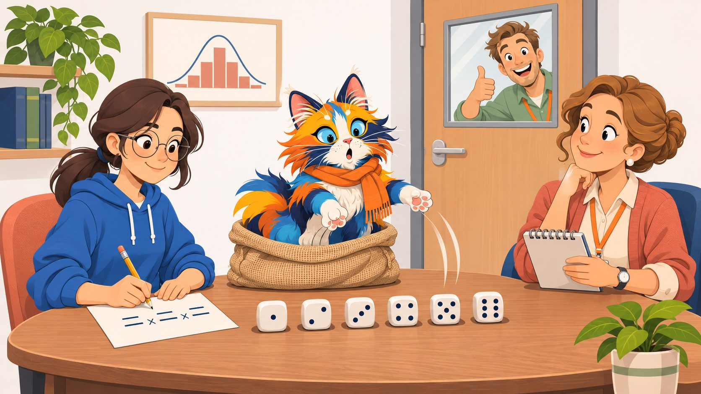
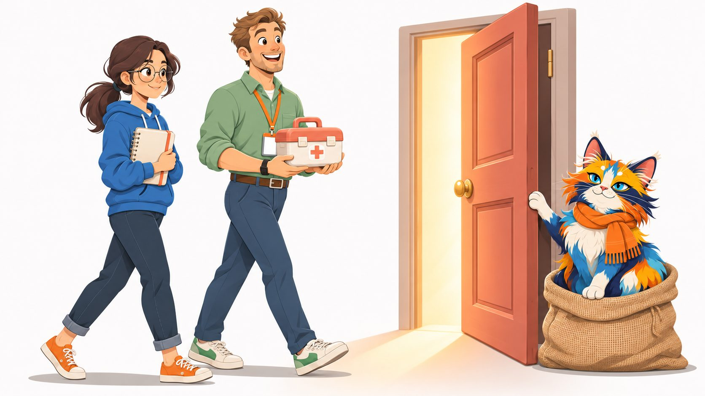

Вероятность на пальцах · шаг 1
Исходы и события

Алиса, Боб и Котейка открыли маленькое кафе. Весь курс — это истории из его жизни, и в каждой прячется вероятность.
Что будет в этом шаге
Главная привычка всего курса: представь, что ситуация повторилась тысячу раз, и считай в штуках. Тогда вероятность — это просто доля случаев.
В этом шаге ты:
- поймёшь, что такое исход и событие, и почему не все варианты одинаково вероятны;
- получишь первую формулу вероятности и узнаешь, когда ей можно верить;
- соберёшь таблицу двух кубиков и посчитаешь вероятности сумм;
- напишешь функцию на Python и решишь три задачи с собеседований.
Каждое правило будет трижды: историей, в штуках и формулой. Сначала угадываешь, потом проверяешь руками.
- 1. Исходы и события
- 2. Частота
- 3. Считаем исходы
- 4. Не, и, или
- 5. Условная вероятность
- 6. Байес
- 7. Распределение
- 8. Среднее и разброс
- 9. Собеседование
Кто моет посуду?

Вечер, кафе закрыто, в мойке гора чашек. Мыть не хочет никто. Боб достаёт две монетки:
Алиса подумала секунду и спокойно согласилась. А ты как думаешь?
Как часто посуду будет мыть Боб?
Выбери вариант — и на следующей карточке проверим: бросим монетки за много вечеров.
Проверим: бросаем монетки вечер за вечером
Каждый вечер — две монетки. Смотрим, сколько выпало орлов, и кто моет посуду.
Сколько орлов выпадает за вечер
столбик — доля вечеров · точка — сколько должно быть по теории
Ноль, один и два орла выпадают не одинаково часто. Один орёл — примерно в половине вечеров. Почему — на следующей карточке.
Покрасим монетки — и всё станет видно

Пусть одну монетку бросает Котейка, а другую — Алиса. Тогда у вечера не три варианта, а четыре:
Каждая монетка сама по себе — орёл или решка поровну, и друг другу они не мешают. Поэтому все четыре варианта выпадают одинаково часто — по четверти. Под плитками — сколько раз каждый выпал в твоих бросках.
Вот и разгадка. «Ровно один орёл» получается двумя способами: орёл у Котейки и решка у Алисы — или наоборот. А «ноль орлов» и «два орла» — только одним способом каждый. Поэтому Боб моет половину вечеров, а не треть. Алиса это знала.
Ошибка, которую сделал великий математик

Боб ошибся не один. В 1754 году Жан Д'Аламбер — один из главных математиков своего времени — написал в статье для «Энциклопедии», что шанс получить хотя бы одного орла за два броска равен 2/3. Он рассуждал так: вариантов три — орёл сразу (дальше можно не бросать), решка-орёл, решка-решка. Два из трёх подходят.
Но эти три варианта не равноценны: «орёл сразу» — это на самом деле два исхода, ОО и ОР. Правильный ответ — 3 из 4.
Правило: делить «подходящие на все» можно, только если варианты равновероятны. Если сомневаешься — покрась монетки и выпиши варианты для каждой по отдельности.
Похожую ошибку делал и Лейбниц — его задачу ты встретишь на собеседовании в конце шага.
Исход и событие
Опыт — то, что можно повторять: бросок двух монеток, бросок кубика, визит гостя в кафе.
Исход — один из вариантов, чем может закончиться опыт. Варианты выбирают так, чтобы всегда случался ровно один. У двух монеток четыре исхода: ОО, ОР, РО, РР. Их список называют пространством исходов и обозначают Ω (омега).
Событие — набор исходов, утверждение, которое после опыта либо верно, либо нет. «Ровно один орёл» — это набор {ОР, РО}.
Собери событие сам: нажимай на плитки или выбери готовое.
Выбери исходы — посчитаем вероятность события.
Событие из всех исходов называют достоверным (вероятность 1), из ни одного — невозможным (вероятность 0).
Случайная величина и реализация

Случайная величина — то, что мы наблюдаем в опыте: сторона монетки, число очков на кубике, сделал ли гость заказ. До опыта мы не знаем, что выпадет.
Реализация — конкретное значение в конкретном опыте: в этом броске выпал орёл, в следующем — решка. Каждый опыт даёт одну реализацию.
«чётное» — ½«заказал» — ? (узнаем в шаге 2)
Из опыта с двумя монетками можно собрать новую случайную величину — число орлов. Её реализации — 0, 1 и 2, а гистограмма на карточке «Бросаем монетки» показывает, как часто выпадает каждая. Такая картина называется распределением, о нём будет шаг 7.
Первая формула вероятности
P(A) = число исходов в Aчисло всех исходов
Читается так: «вероятность события A — это доля подходящих исходов среди всех».
В учебниках пишут коротко: P(A) = |A| / |Ω|.
Когда работает: только если все исходы равновероятны — как четыре плитки монеток или шесть граней честного кубика. Для «0, 1 или 2 орла» формула даёт неверные ⅓ — это и есть ловушка Д'Аламбера.
Два кубика: какая сумма выпадает чаще?
Боб придумал для гостей игру: Котейка бросает два кубика, и если сумма угадана — кофе в подарок. Какую сумму загадывать?
Таблица исходов. Синий кубик — по строкам, коралловый — по столбцам. В клетке — сумма. Все 36 клеток равновероятны. Выбери сумму:
Проверим бросками
сумма двух кубиков · столбик — доля бросков · точка — клеток из 36
Как решать такие задачи
- Опиши опыт. Что именно повторяется: бросок двух монеток, двух кубиков?
- Выпиши исходы. Покрась монетки и кубики, чтобы ОР и РО не слиплись в одно.
- Проверь, что исходы равновероятны. Нет ли варианта, который на деле — несколько исходов?
- Посчитай подходящие и раздели на все.
- Проверь симуляцией — бросками или кодом. Если не сошлось, ищи ошибку в шаге 2 или 3.
Следующие две карточки — то же самое, но в коде.
Сто тысяч бросков за секунду
Этот код бросает два кубика 100 000 раз и сравнивает доли сумм с таблицей. Запусти, а потом поменяй: брось три кубика или посчитай не сумму, а максимум.
Теперь сам: точная вероятность суммы
Допиши функцию: пусть она переберёт все 36 пар (a, b) и посчитает, в скольких сумма равна s. Это та же таблица 6×6, только в коде. Нажми «Проверить».
Три задачи и как на них отвечать

Схема ответа одна: переформулируй → выпиши исходы → посчитай в штуках → запиши формулой → скажи вывод одной фразой. Сначала реши сам, потом открывай.
Бросают два кубика. Какова вероятность, что сумма равна 7?
Исходы: 36 равновероятных пар (синий, коралловый).
Подходящие: (1,6), (2,5), (3,4), (4,3), (5,2), (6,1) — шесть штук, вся диагональ таблицы.
Формула: P = 6/36 = 1/6 ≈ 16,7%.
Вывод: одна шестая — и это самая частая сумма. В 1000 бросков — около 167 семёрок.
Бросают три монетки. Какова вероятность, что орлов выпадет хотя бы два?
Исходы: у каждой монетки 2 варианта, всего 2 · 2 · 2 = 8: ООО, ООР, ОРО, РОО, ОРР, РОР, РРО, РРР.
Подходящие: ООО, ООР, ОРО, РОО — четыре.
Формула: P = 4/8 = 1/2.
Вывод: ровно половина. Можно и без перебора: «хотя бы два орла» и «хотя бы две решки» симметричны и вместе покрывают все исходы.
Что выпадает чаще при броске двух кубиков: сумма 11 или сумма 12?
Ловушка: «и то и другое получается одним способом — 5 и 6, 6 и 6, значит поровну». Так ошибся Лейбниц.
Исходы: покрасим кубики. Сумма 11 — это (5,6) и (6,5), две клетки. Сумма 12 — только (6,6), одна клетка.
Формула: P(11) = 2/36, P(12) = 1/36.
Вывод: 11 выпадает вдвое чаще — та же история, что с ОР и РО у монеток.
- Исход — один вариант, чем кончится опыт. Ω — список всех исходов.
- Событие — набор исходов. «Ровно один орёл» = {ОР, РО}.
- Случайная величина — то, что наблюдаем (сторона монетки, число орлов); реализация — что выпало в этот раз.
- P(A) = |A| / |Ω| — только для равновероятных исходов.
- Покрась монетки и кубики: ОР и РО — разные исходы. 0, 1, 2 орла — не равновероятны (¼, ½, ¼).
- Два кубика: 36 клеток. Сумма 7 — 6 клеток (1/6), сумма 2 и 12 — по одной (1/36).
- Не уверен — проверь симуляцией.
Через неделю Боб приходит с претензией

Может ли так быть при честных монетках? И сколько вечеров нужно, чтобы доля стала похожа на половину? Об этом — шаг 2 «Вероятность как частота». Скоро.